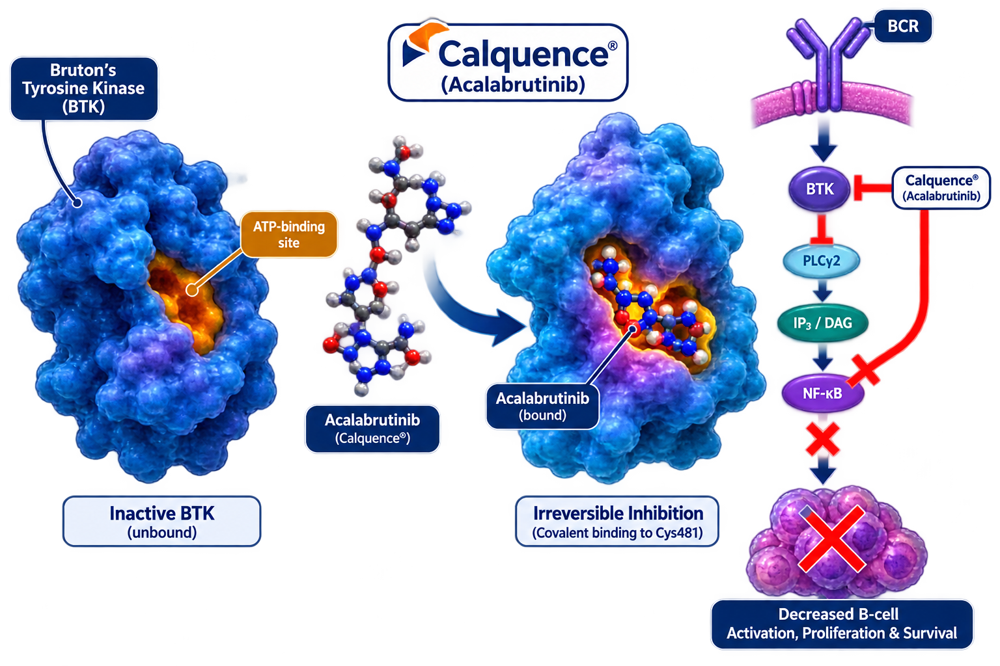

AstraZeneca
Calquence (acalabrutinib) is a highly selective Bruton’s tyrosine kinase (BTK) inhibitor indicated for the treatment of chronic lymphocytic leukemia (CLL) and small lymphocytic lymphoma (SLL).
Calquence
Acalabrutinib
BTK Inhibitor
Oral
AstraZeneca
Acalabrutinib is a second-generation Bruton’s Tyrosine Kinase (BTK) inhibitor. It binds covalently to BTK and blocks B-cell receptor signaling, reducing proliferation and survival of malignant B-cells.

| Trial | Setting | Outcome |
|---|---|---|
| ELEVATE-TN | First-Line CLL | Improved Progression-Free Survival |
| ELEVATE-RR | Relapsed/Refractory CLL | Non-Inferior Efficacy with Improved Safety |
| ASCEND | Relapsed/Refractory CLL | Superior PFS vs Investigator Choice |
Recommended dose: 100 mg orally twice daily.
| Recommended Dose | 100 mg Twice Daily |
|---|---|
| Route | Oral |
| Schedule | Continuous Treatment |
| With Food | With or Without Food |